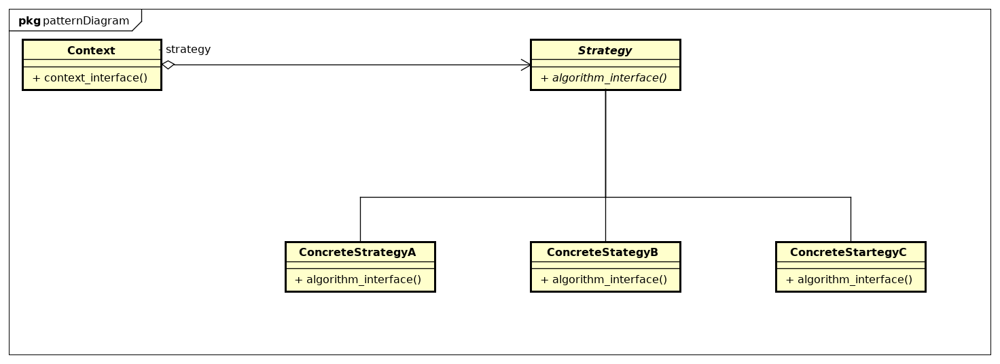

21 - Strategy
Descrição do padrão:
Estratégia é um padrão de projeto que permite que sejam criadas várias classes encapsuladas umas das outras mas que podem ser trocadas, de forma que o algoritmo varie independentemente dos clientes que o utilizam.
UML do padrão:
Descrição do exemplo do livro:
O exemplo é um algoritmo que determina as melhores posições para uma quebra de linha num texto. É baseado na implementação das classes Composition e Compositor. A classe Composition contém diversos Components, que são tanto textos quanto elementos gráficos em um determinado documento. Um composition arranja os elementos em linhas utilizando uma instância da subclasse Compositor. Cada componente tem um tamanho associado a ele, além de sua capacidade de aumentar e encolher. Essas informações dos components são passadas para o compositor pelo composition, que os utiliza para determinar os melhores lugares para as quebras de linhas.